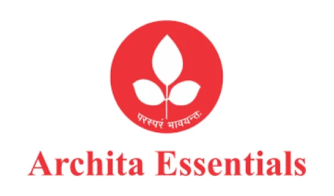
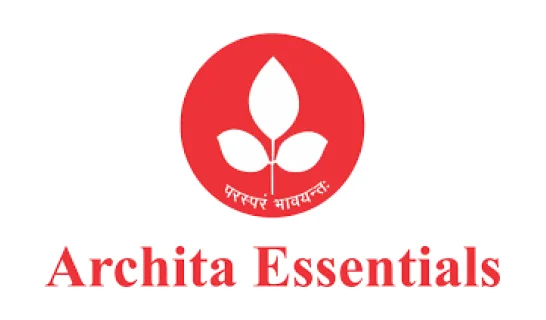

Free AI Assistant
Task Tracker Ultimate Task Management Solution
Efficient. Intuitive. Reliable.Welcome to Task Tracker, the comprehensive task management software built to simplify project workflows, track progress, and boost team productivity. Designed for businesses of all sizes, Task Tracker is your go-to task tracker for seamless task execution and efficient management.


 
